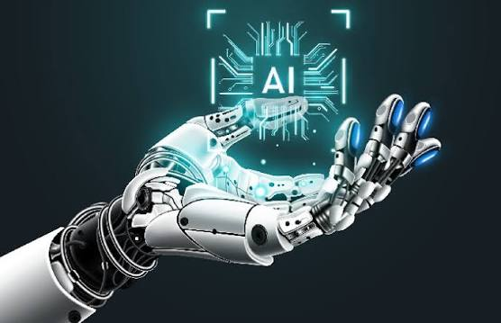

Artificial Intelligence
Explore how artificial intelligence is changing the way we live, work and interact with technology.
what is AI
Understand the basics of artificial intelligence and how it works.
Applications
Explore how AI is used in technology, education, business and more.
Future Impact
Discover how AI may shape the future of technology.
What is AI?
Artificial Intelligence is a technology that allows computers and machines to learn from information, recognize patterns and perform tasks that normally require human intelligence.
What is AI?
Artificial Intelligence is a technology that allows computers and machines to learn from information, recognize patterns and perform tasks that normally require human intelligence.
What is AI?
Artificial Intelligence is a technology that allows computers and machines to learn from information, recognize patterns and perform tasks that normally require human intelligence.
More About Artificial Intelligence
Artificial Intelligence enables computers to learn from data, recognize patterns and perform tasks that normally requirs human intelligence.
AI in Everyday Life
Artificial Intelligence is becoming part of everday life, from smart assistants and recommendation systems to intelligent features in modern devices.
How AI Learns
AI systems analyze data, identify patterns and improve their results through learning algorithms
AI Technology
AI is helping modern technologies become smarter, faster and more capable of adapting to users' needs.